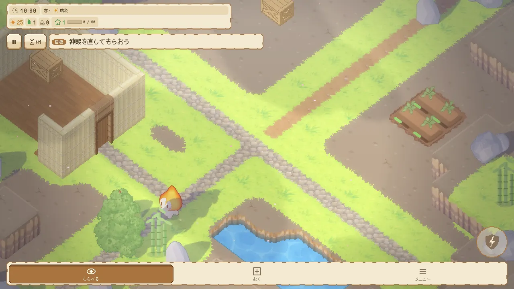
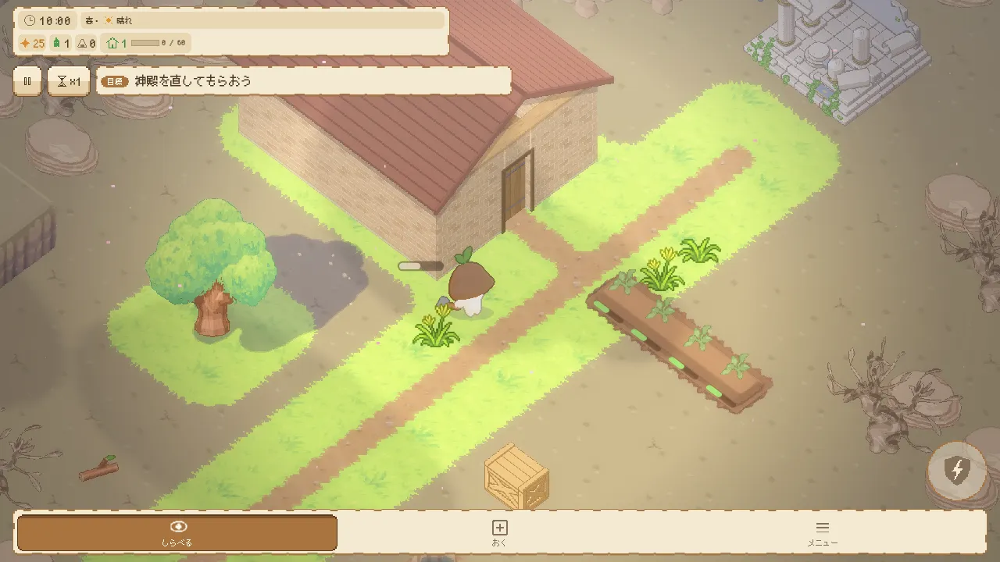
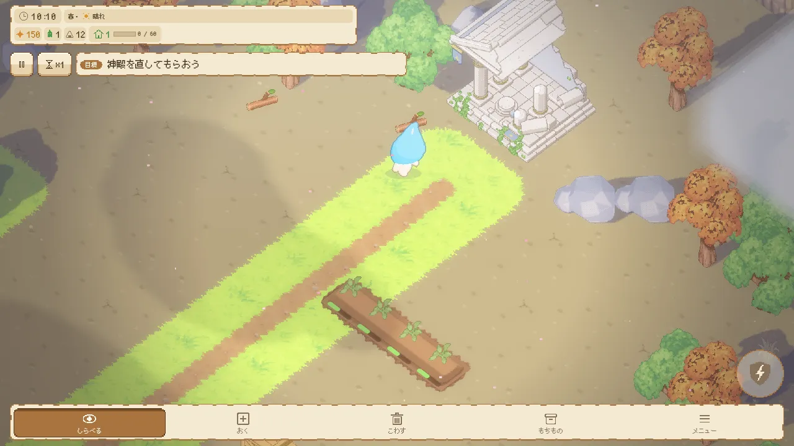
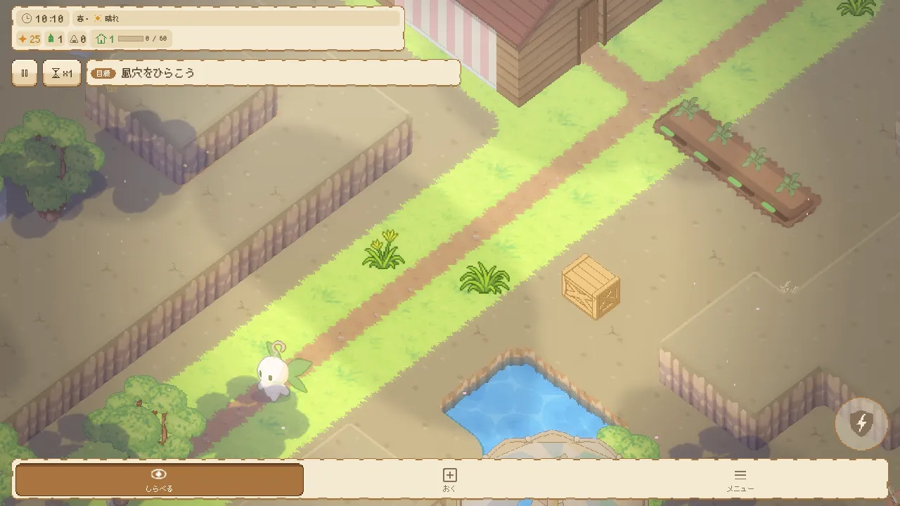

どんなゲーム？
あなたは、荒れた土地をまもる守り神。そこにくらす、ちいさなせいれいたちといっしょに、村をつくっていきます。
せいれいたちは、ごはんを食べて、はたらいて、あそんで、ねむります。家や畑をつくり、なかまをむかえ、村をゆたかにしていきましょう。夜になると、こわいものたちがやってきます。村のみんなを守りながら、土地ごとのお話をすすめて、ヌシ様の力をとりもどします。
5つの土地
はじめは「はじまりの草原」から。お話をすすめると、ほかの土地もひらきます。
はじまりの草原
WORLD 1・木自然の力がくずれて荒れた草原。せいれいたちと村をつくり、守護の力をとりもどそう。

火山のふもとの村
WORLD 2・火地面の熱が冷えきった、火の山のふもとの村。こおりかけた温泉に、ぬくもりをとりもどそう。

ひびわれた岩の谷
WORLD 3・土大地がひびわれ、くずれかけた谷の村。ちいさな土のせいれいと、谷をつなぎなおそう。

霧のみずべの村
WORLD 4・水霧が晴れず、水の流れが止まった村。水門をあけて、水路で水をながそう。

風のやんだ空の村
WORLD 5・風風が止まり、しずみかけた浮き島の村。
草原のお話をおえると、のんびり自分だけの村をつくれる「フリーモード」もひらきます。
あそびかた
- スマホ
- タップでえらぶ・しらべる。ドラッグで地図をうごかし、2本の指で大きく・小さく。
- パソコン
- クリックでえらぶ・しらべる。ドラッグで地図をうごかし、マウスのホイールで大きく・小さく。
- 画面の下
- 「しらべる」で物やせいれいを見る。「おく」で家や家具をおく。「メニュー」でセーブなど。
うごく環境とセーブ
- スマホ・タブレット・パソコンのブラウザで遊べます。インストールはいりません。
- セーブは、遊んでいるブラウザに自動でのこります。土地ごとにべつのセーブです。
- ブラウザのデータを消すと、セーブも消えます。メニューの「セーブの書き出し」でファイルにしておくと、あとで読みこめます。ほかのスマホやパソコンへうつすときも、これを使います。